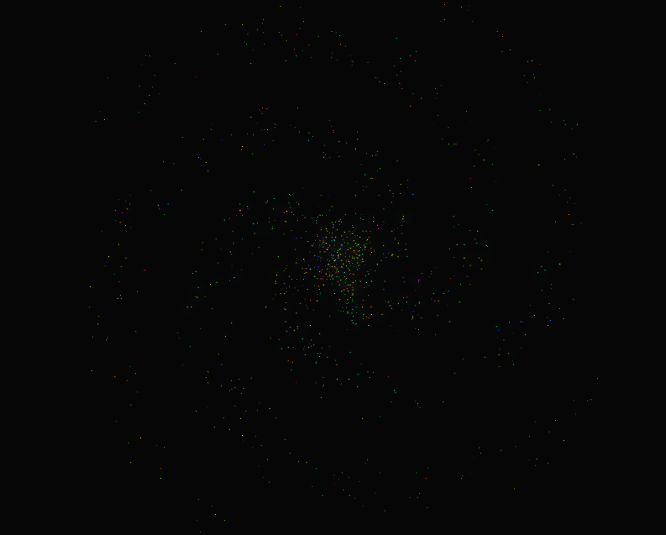
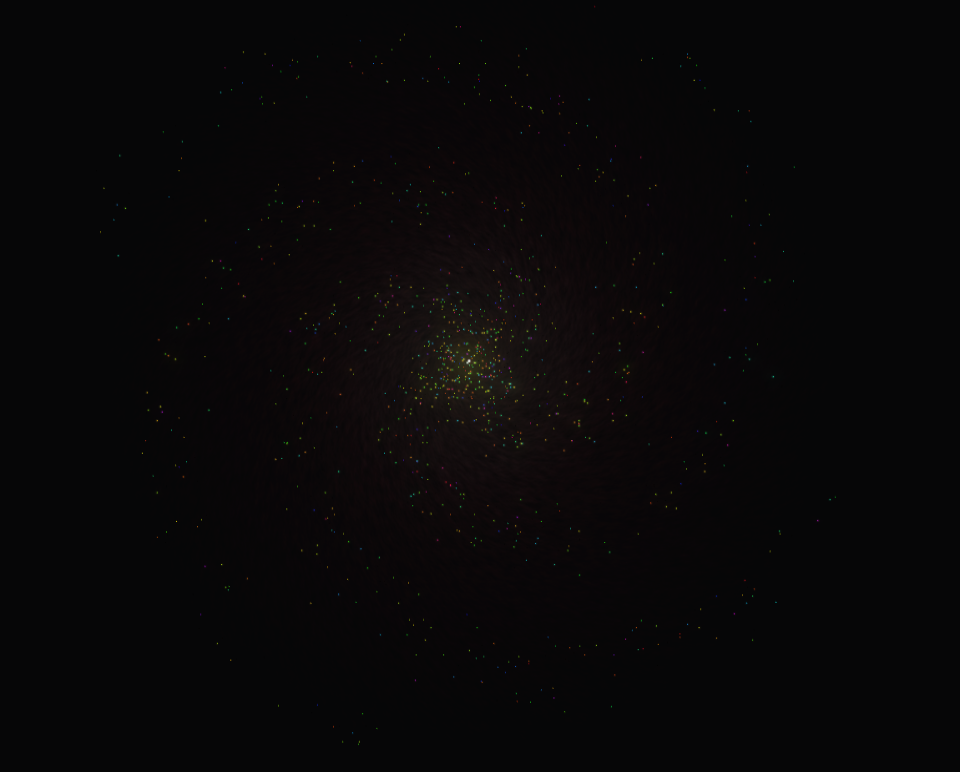
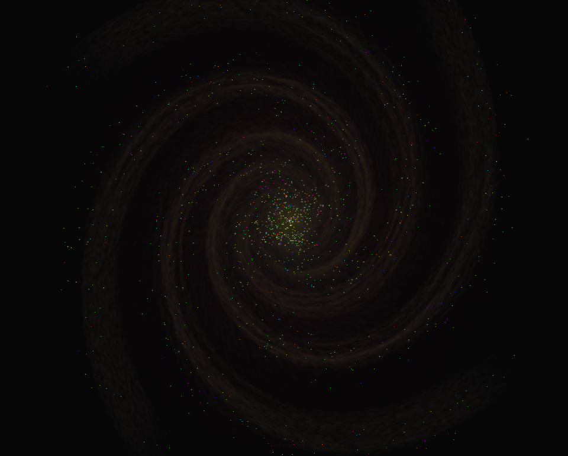
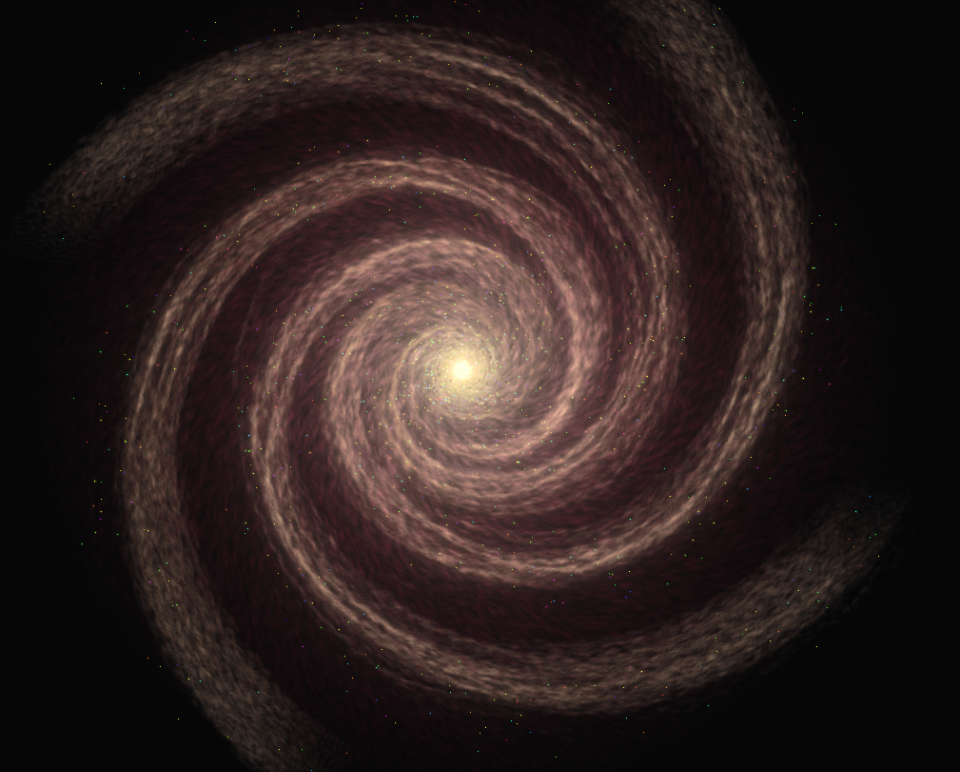

During late 2023, I developed a procedural galaxy generator as part of a video game I am working on. The goal was to produce unique, volumetric galaxies that the camera could fly through — not just flat backdrops but fully three-dimensional structures. These galaxies serve as the foundation for generating skyboxes for solar systems, which can be entered by clicking on individual stars.
The generator begins by placing stars in spiral patterns around a central axis. The number of spiral arms, their curvature, and the gravitational "weight" of the galaxy's center are all randomized from a seed. Each star is initially placed in a weighted disk, then pulled toward the nearest point on the closest spiral arm, producing natural-looking galactic structure.
The visual effects are driven by the Unity VFX Graph with parameters for coloration, particle velocity, noise, and vector fields. These parameters are generated from the same randomizer seed as the stars, ensuring each galaxy has a unique visual identity. The first particle system spawns particles in a torus around the galaxy's center, where each particle is subjected to inward and rotational forces to simulate the swirling motion of a galactic dust disk.
The second particle system represents the spiral arms. Particles are instantiated on the surfaces of spheres placed at the outer perimeter of the galaxy, then drawn inward toward the center with an additional rotational force. This rotational force is tied to the spiral curvature of the galaxy generator, so the particle trails naturally follow the same spiral structure as the stars.




A showcasing for each step of generating the galaxy VFX. Starting with the stars (first image), a disk of dust particles is added (second image). After this, the spirals particles are added (third image, and last image with increased opacity).